Arrival is Denis Villeneuve's 2016 film about linguist Louise Banks, brought in by the military to communicate with heptapods, aliens who've arrived on Earth in twelve towering ships with no clear purpose. It's my favorite film, one I keep coming back to, and every rewatch leaves me thinking about the heptapods' writing system a little longer than the last. This project is my homage to it, a small way of sitting with something that has stuck with me for years.
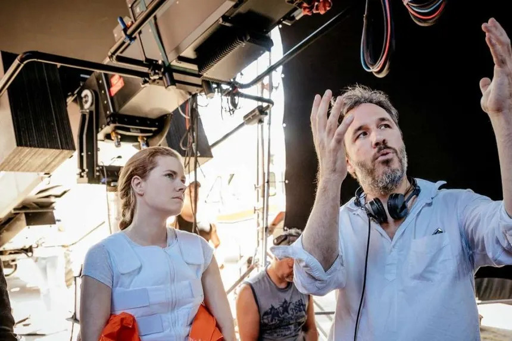
Using the handful of examples the movie gives us, plus the glyph set collected in Wolfram Research's, I wanted to build a tool that turns your own text into Heptopod glyphs and translates them back.
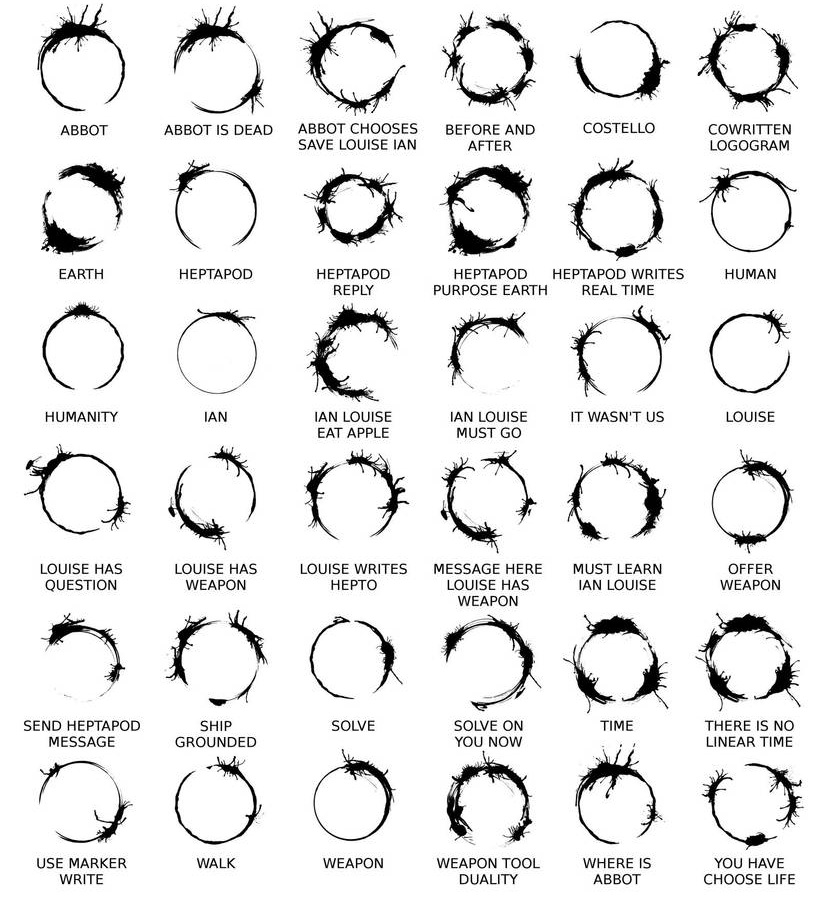
The language of Arrival
In the film, the heptapods actually use two languages: a spoken one, Heptapod A, and a written one, Heptapod B, which is what this project is about. Heptapod B has no fixed word order and is written as a single circular logogram per utterance rather than a sequence of symbols read left to right. A whole sentence, including its subject, its qualifiers, and its meaning, is folded into one non-linear form, with no clear beginning or end. Learning to read it is central to the film's plot, since the language's circular, non-sequential structure is tied to the way the heptapods experience time itself.
How it was designed
The logograms were created by artist Martine Bertrand, working with her husband, production designer Patrice Vermette, who wanted to try something different from the typical sci-fi script. Bertrand took inspiration from squids firing ink and the rings coffee cups leave on a table, refining that into the branching, splattered rings seen throughout the film. They're circular so that they carry no inherent direction.
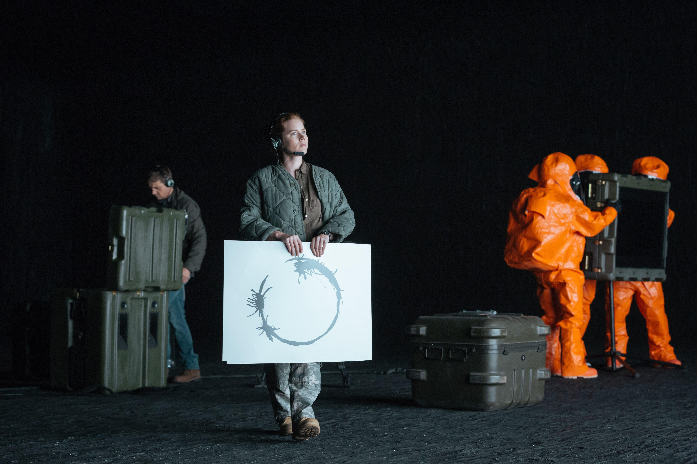
Building a translator
The heptapods' writing has stuck with me since I first saw the film, and even more so after rewatching it some time later. Since the language of Arrival was never fully developed, I decided I wanted to fill that gap somewhat, though with a slightly different approach. I wanted to use the existing glyphs as a starting point and build a complete language from them. Turns out that's not as easy as I first thought.
Encoding text into glyphs
The first idea that comes to mind, and the one I went with, is to use embeddings, so that semantically similar words and phrases produce visually similar glyphs. I embed each word within a sentence on its own and overlap the resulting glyphs into one combined form, matching the way a full utterance in the film reads as a single circular shape rather than a row of separate symbols. This mirrors how the film's own logograms work: individual concepts are drawn as their own ring and then overlapped into a single denser form once combined into a sentence.
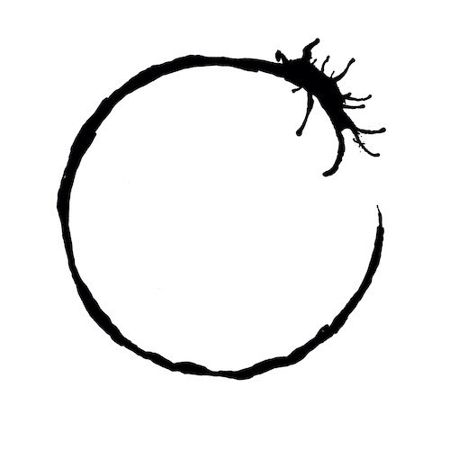
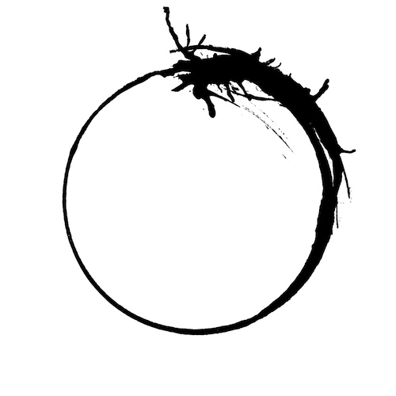
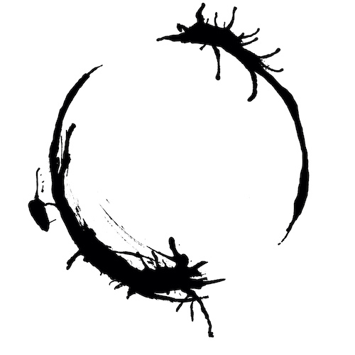
Both component structures are still visible in the combined form: the "Louise" ring and the "weapon" ring are each individually recognisable in "Louise has weapon," just rotated slightly from their standalone versions before being overlapped, which is the same rotate-then-overlap behaviour I aimed for in the generated glyphs below. The "has" presumably adds some structure of its own too, but the film never gives us a standalone glyph for it, so there's no way to isolate what it contributes.
My first attempt at this, built last summer, traced the same basic idea of driving the glyph from a word embedding, but didn't look nearly as good. Rather than fine-tuning a diffusion model on the film's glyphs, the embedding was mapped directly onto a simple parametric ring: values from the embedding controlled the stroke thickness, radial wobble, gaps along the stroke, and the ring's global rotation, with a Gaussian blur applied on top to soften the result. It produced recognisable rings, but nothing like the organic, ink-like quality of the originals, which is what pushed me towards the LoRA-tuned Stable Diffusion approach used now.
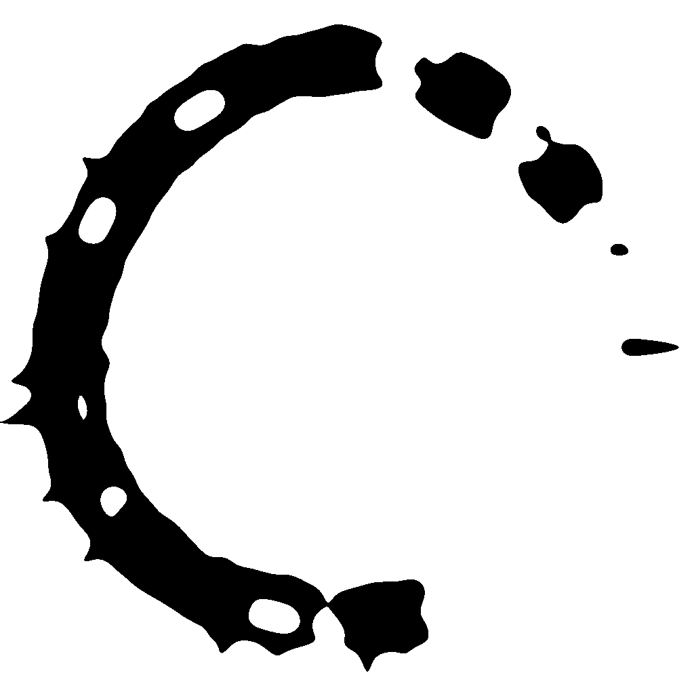
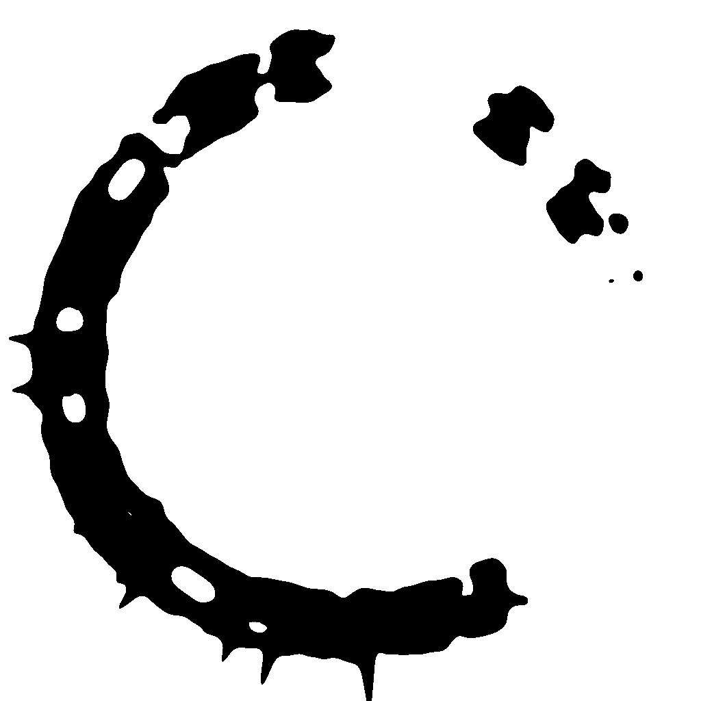
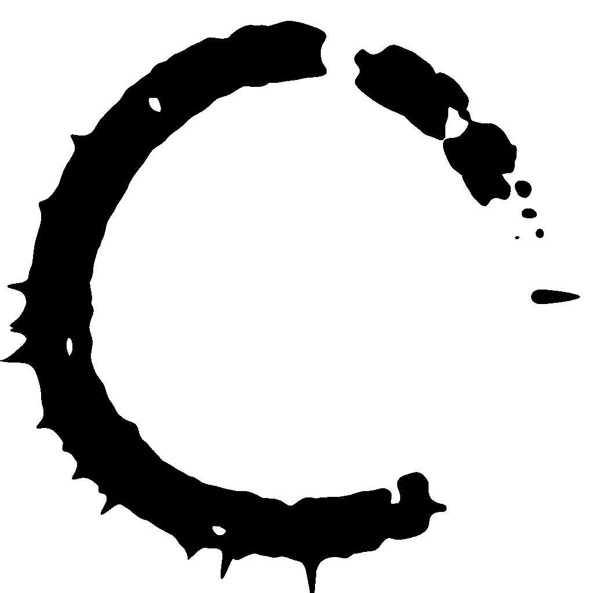
Getting a good embedding isn't the hard part, the hard part is that it lives in a high-dimensional space, which doesn't make finding a good mapping down to 2D particularly easy.
To get glyph-like structures out in the first place, I fine-tuned a Stable Diffusion model with LoRA on that same glyph set from the film, then sample new ink textures from it and composite them with some noise and rotation, which is deterministic and dependends on the general embedding of the whole input.
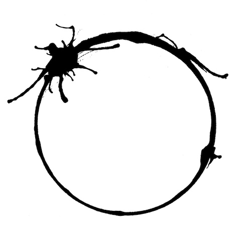
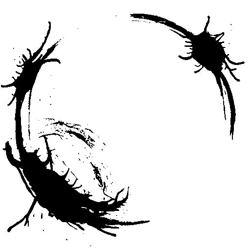
The web interface keeps things minimal. A small chat-style button opens a translation panel where you type a word or phrase, hit "Encode", and watch the glyph render in place. From there you can download it as a PNG directly from the panel. The design takes its cue from the film's contact room, where Louise steps up to the screen separating her from the heptapods to exchange writing, so the panel opens the same way, as a small window you approach to send something across. I built the whole thing as a webpage that anyone can run themselves, using the LoRA adapters and models I upload to GitHub.
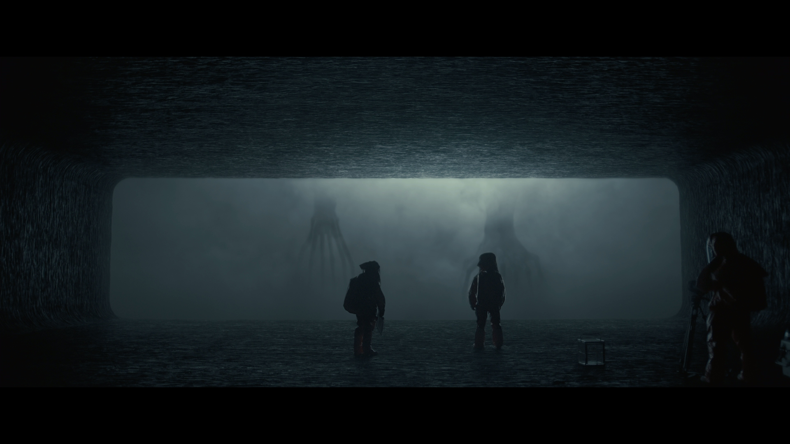
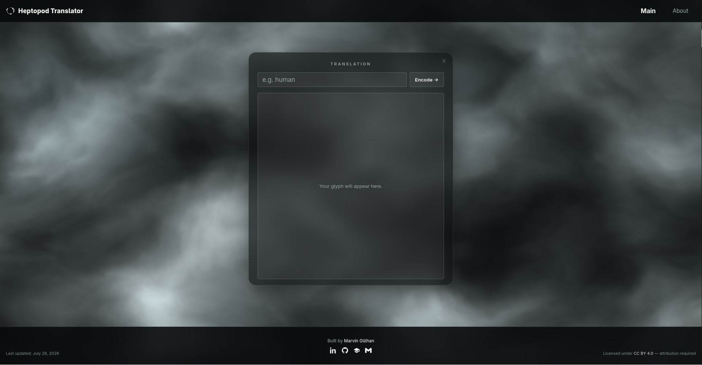
What's next
When I find some more time to pursue the project, I will further work on the encoder before moving on to the decoder. I'll update this page as I go, though the project itself may well move faster than I get around to keeping the write-up in sync, so check the GitHub repo above for the current state.